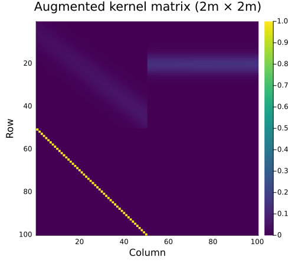
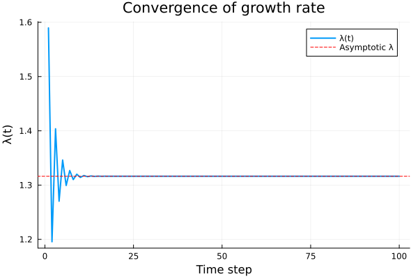
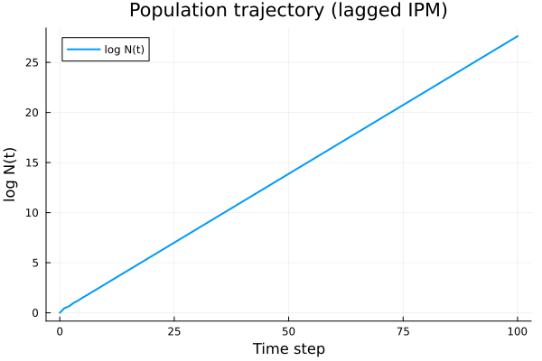
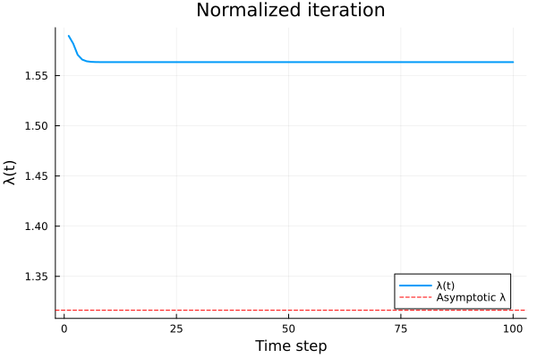
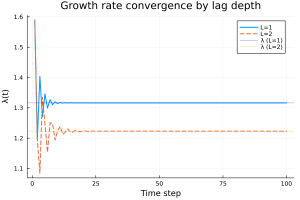

Time-Lagged Integral Projection Models
Overview
Standard IPMs assume that all transitions depend on an individual's current size: $n(z', t+1) = \int K(z', z) \, n(z, t) \, dz$. In some biological systems, however, demographic rates depend on the state at earlier time steps. For example, in monocarpic perennials like Carlina vulgaris, fecundity depends on the rosette size achieved one or more years before flowering (Kuss et al. 2008).
A time-lagged IPM generalizes the projection kernel to:
$
n(z', t+1) = \int P(z', z) \, n(z, t) \, dz + \int F(z', z) \, n(z, t - L) \, dz $
where $P$ is the survival-growth kernel (acting on the current state) and $F$ is the fecundity kernel (acting on the state $L$ time steps in the past). This is solved via state augmentation: the population vector is extended to track the full history, converting the time-lagged system into a standard Markovian system with a $(L+1)m \times (L+1)m$ block matrix.
Setup
using IntegralProjectionModels
using Distributions
using LinearAlgebra
using PlotsVital Rate Functions
We define a simple monocarpic plant model with logistic survival, normal growth, and size-dependent fecundity.
# Domain
domain = ContinuousDomain(0.0, 5.0, 50)
z = meshpoints(domain)
h = step_size(domain)
m = length(z)50Survival and Growth
survival = LinearSurvival(-0.5, 0.3)
growth = NormalGrowth(0.5, 0.8, 0.5)NormalGrowth{Float64}(0.5, 0.8, 0.5)Fecundity
fec = FecundityRate(0.003, 0.015, 2.0, 0.3, 1.0)FecundityRate{Float64}(0.003, 0.015, 2.0, 0.3, 1.0)Kernel Construction
The P kernel combines survival and growth into the survival-growth transition. The F kernel describes fecundity.
P = PKernel(survival, growth, domain)
F = FKernel(fec, domain)FKernel{FecundityRate{Float64}, ContinuousDomain{Float64}}(FecundityRate{Float64}(0.003, 0.015, 2.0, 0.3, 1.0), ContinuousDomain{Float64}(0.0, 5.0, 50), NoCorrection)Standard (Non-Lagged) Model
K_standard = materialize(P) .+ materialize(F)
λ_standard = lambda(K_standard)
println("Standard λ = ", round(λ_standard, digits=4))Standard λ = 1.5634Creating a Lagged Kernel
The LaggedKernel wraps the immediate kernel ($P$, applied to $n(t)$) and the lagged kernel ($F$, applied to $n(t-L)$):
lk = LaggedKernel(P, F)
println(lk)LaggedKernel(max_lag=1, 1 lagged component(s))Materializing the Augmented Matrix
The materialize function discretizes both kernels and constructs the $(L+1)m \times (L+1)m$ augmented block matrix:
$
\mathbf{K}_{\text{aug}} = \begin{bmatrix} \mathbf{P} & \mathbf{F} \ \mathbf{I} & \mathbf{0} \end{bmatrix} $
K_aug = materialize(lk)
println("Mesh points: ", m)
println("Augmented matrix size: ", size(K_aug), " = (2×", m, ")²")Mesh points: 50
Augmented matrix size: (100, 100) = (2×50)²Block Structure
heatmap(K_aug, title="Augmented kernel matrix (2m × 2m)",
xlabel="Column", ylabel="Row",
color=:viridis, yflip=true, size=(500, 450))
The four blocks are visible: P (top-left), F (top-right), I (bottom-left), and 0 (bottom-right).
Convenience Function
The expand_lag_kernels function materializes both kernels and returns the augmented matrix in one step:
K_aug2 = expand_lag_kernels(P, F, domain)
println("Matches materialize(lk): ", K_aug ≈ K_aug2)Matches materialize(lk): trueEigenanalysis
The asymptotic growth rate $\lambda$ is the dominant eigenvalue of the augmented matrix:
λ_lagged = lambda(K_aug)
println("Standard λ: ", round(λ_standard, digits=4))
println("Lagged λ: ", round(λ_lagged, digits=4))Standard λ: 1.5634
Lagged λ: 1.3163The time lag reduces the growth rate because fecundity is delayed by one time step.
Population Projection
The IPMProblem solver handles lagged kernels automatically. The solver maintains a history buffer internally and returns only the physical (non-augmented) population state.
n0 = ones(m) ./ m
prob = IPMProblem(SimpleIPM(), DensityIndependent(), Deterministic(),
lk, domain, n0, (0, 100))
sol = solve(prob, DirectIteration())
println("Output dimension: ", length(sol.u[end]), " (physical state, m=", m, ")")Output dimension: 50 (physical state, m=50)Growth Rate Convergence
The per-step growth rate $\lambda(t)$ converges to the asymptotic value:
plot(sol.lambdas, xlabel="Time step", ylabel="λ(t)",
title="Convergence of growth rate",
label="λ(t)", linewidth=2)
hline!([λ_lagged], label="Asymptotic λ", linestyle=:dash, color=:red)
println("Final λ(t) = ", round(sol.lambdas[end], digits=4),
", eigenanalysis λ = ", round(λ_lagged, digits=4))Final λ(t) = 1.3163, eigenanalysis λ = 1.3163Total Population Trajectory
total_pop = [sum(u) for u in sol.u]
plot(sol.t, log.(total_pop),
xlabel="Time step", ylabel="log N(t)",
title="Population trajectory (lagged IPM)",
label="log N(t)", linewidth=2)
Normalized Iteration
For numerical stability with long projections, normalization keeps the population state bounded while preserving the growth rate estimates:
prob_norm = IPMProblem(SimpleIPM(), DensityIndependent(), Deterministic(),
lk, domain, n0, (0, 100); normalize=true)
sol_norm = solve(prob_norm, DirectIteration())
plot(sol_norm.lambdas, xlabel="Time step", ylabel="λ(t)",
title="Normalized iteration",
label="λ(t)", linewidth=2)
hline!([λ_lagged], label="Asymptotic λ", linestyle=:dash, color=:red)
Multi-Lag Model (L=2)
For longer delays, specify the lag explicitly. Here fecundity depends on the state two time steps in the past:
lagged_dict = Dict{Int, typeof(F)}(2 => F)
lk2 = LaggedKernel(P, lagged_dict, TimeLagStructure(2))
K_aug2 = materialize(lk2)
println("Augmented matrix size (L=2): ", size(K_aug2), " = (3×", m, ")²")Augmented matrix size (L=2): (150, 150) = (3×50)²λ_lag2 = lambda(K_aug2)
println("λ (L=1): ", round(λ_lagged, digits=4))
println("λ (L=2): ", round(λ_lag2, digits=4))λ (L=1): 1.3163
λ (L=2): 1.2229Longer delays further reduce the growth rate.
n0_2 = ones(m) ./ m
prob2 = IPMProblem(SimpleIPM(), DensityIndependent(), Deterministic(),
lk2, domain, n0_2, (0, 100))
sol2 = solve(prob2, DirectIteration())
plot(sol.lambdas, label="L=1", linewidth=2,
xlabel="Time step", ylabel="λ(t)",
title="Growth rate convergence by lag depth")
plot!(sol2.lambdas, label="L=2", linewidth=2, linestyle=:dash)
hline!([λ_lagged], label="λ (L=1)", linestyle=:dot, color=:blue, alpha=0.5)
hline!([λ_lag2], label="λ (L=2)", linestyle=:dot, color=:orange, alpha=0.5)
Connection to Kuss et al. (2008)
The augmented matrix approach follows Kuss et al. (2008), who showed that time-lagged structured population models can be analyzed using standard eigenvalue methods after state augmentation. The bigmatrix() terminology from their paper corresponds to our augmented matrix $\mathbf{K}_{\text{aug}}$:
- The top block row contains the kernel matrices $[\mathbf{K}_0, \mathbf{K}_1, \ldots, \mathbf{K}_L]$
- The sub-diagonal contains identity matrices that shift the population history
- Eigenanalysis of the augmented matrix yields the correct asymptotic growth rate, stable distribution, and reproductive value for the lagged system
Summary
In this vignette we:
- Defined survival-growth ($P$) and fecundity ($F$) kernels for a monocarpic plant
- Constructed a lagged kernel with
LaggedKernel(P, F)where fecundity depends on the previous time step - Materialized the $(L+1)m \times (L+1)m$ augmented block matrix
- Compared the asymptotic growth rate $\lambda$ between standard and lagged models
- Projected population dynamics with
IPMProblemandDirectIteration, observing convergence to the eigenanalysis $\lambda$ - Demonstrated normalized iteration for numerical stability
- Built a multi-lag model ($L=2$) and observed the effect of longer delays
- Connected the augmented matrix structure to the Kuss et al. (2008) framework